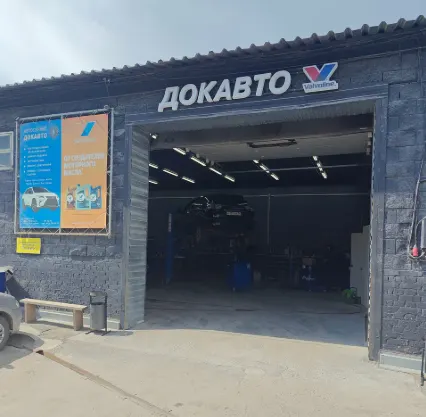
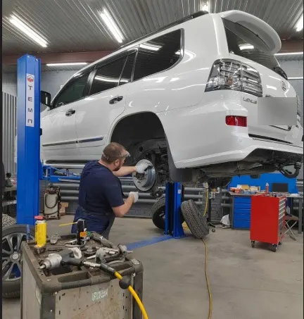
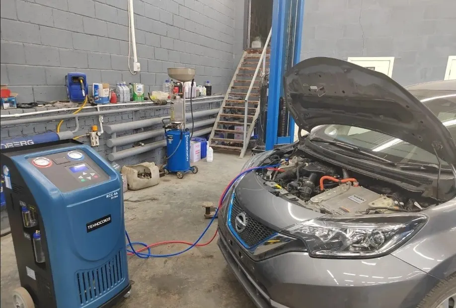
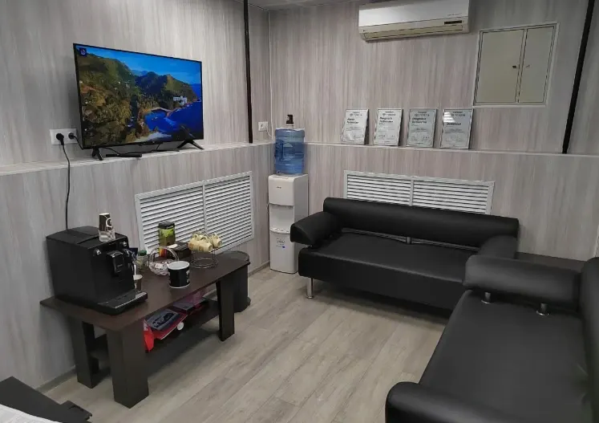

Автосервис · ежедневно
Автосервис Док Авто
Качественный ремонт и обслуживание вашего авто. Гарантия на запчасти.
Новосибирск, Моторная улица, 16
- Пн–Пт 8:00–20:00, Сб–Вс 9:00–19:00
- Гарантия на запчасти
- Toyota, Lexus, Nissan, Honda, Mazda, Subaru, Kia, Hyundai

Что рядом с ремонтом
Входит
- Гарантия на запчасти
- Запчасти можно обсудить и заказать в сервисе
- Комната ожидания с кофе и телевизором
- Запись по телефону, в WhatsApp или Telegram
Отдельно, если нужно
- Запчасти и расходники – отдельно
- Точная сумма зависит от автомобиля
Цены на основные работы
Цены «от», точная сумма зависит от автомобиля. Данные 2ГИС, обновлены 28 марта 2026.
Диагностика
- Компьютерная диагностикачтение и стирание кодов неисправностейот 2 000 ₽
- Диагностика ходовой частиколёса, шины, амортизаторы, подвеска, ступичные подшипникиот 1 400 ₽
- Замер компрессиисостояние поршневой группы и клапановот 2 000 ₽
Обслуживание и климат
- Техническое обслуживаниепакет ТО, при покупке расходников сервисаот 2 600 ₽
- Заправка кондиционераоткачка, проверка, вакуумирование и заправкаот 2 000 ₽
- Дезинфекция системы кондиционированияпроверка давления в системе – бесплатно4 000 ₽
- Омыватель камеры заднего видаустановка под ключот 5 000 ₽
В пакет ТО входят осмотр технических жидкостей, проверка света, давления в шинах и затяжки колёс, диагностика ходовой, замена масла и масляного, воздушного и салонного фильтров.
Четыре шага от записи до выдачи
- 01
Записались
Позвонили или написали в WhatsApp или Telegram: марка, год и что беспокоит.
- 02
Диагностика
Находят причину и называют стоимость работ.
- 03
Ремонт и запчасти
Запчасти подбирают и заказывают в сервисе.
- 04
Выдача
Забираете машину с гарантией на запчасти.



Что говорят клиенты
Находят то, что не нашли другие
«Нашли неисправность, которую долго не могли найти в других сервисах» – из отзыва в 2ГИС.
Лишнего не навязывают
Клиенты пишут, что работают быстро и качественно, без лишних услуг.
Быстро
«Менее чем за час исправили поломку» – из отзыва в 2ГИС.
Удобно ждать
Комната ожидания с кофе и телевизором.
Отзывы с 2ГИС
«Место где работают профессионалы! Нашли неисправность, которую долго не могли найти в других сервисах. Стоимость ремонта приемлимая. Вообщем, мне всё понравилось.»
Дмитрий Шадрин · 2ГИС
«Отличный автосервис! Рекомендую! Сделали всё чëтко и оперативно за приемлемые деньги. Приветливый и компетентный персонал. Буду обращаться ещё. Успехов Вам и процветания!»
Роман Сухачев · 2ГИС
«Обращался уже несколько раз и буду обращаться в дальнейшем в док авто за обслуживанием и ремонтом своего авто. Всегда работают быстро и качественно, лишнего не навязывают. Рекомендую!»
Михаил Барабаш · 2ГИС
Отзывы с карточки в 2ГИС, дословно.
Частые вопросы
Как записаться?
Позвоните по телефону +7 (383) 375-33-73 или выберите время на сайте и отправьте заявку в WhatsApp или Telegram.
Когда вы работаете?
С понедельника по пятницу с 8:00 до 20:00, в субботу и воскресенье с 9:00 до 19:00.
Где находится сервис?
Новосибирск, Моторная улица, 16, 10 бокс (Ленинский район).
С какими марками вы работаете?
По информации сервиса: Toyota, Lexus, Nissan, Honda, Mazda, Subaru, Kia, Hyundai.
Запишитесь на удобное время
- Адрес
- Моторная улица, 16, 10 бокс, Новосибирск
- Часы
- Пн–Пт 8:00–20:00, Сб–Вс 9:00–19:00
- Телефон
- +7 (383) 375-33-73